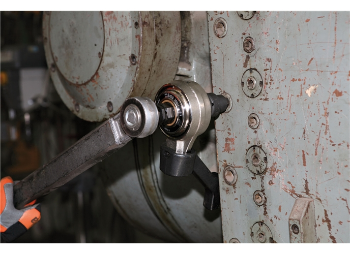

Torque
O torque, também chamado de momento de uma força, é uma grandeza física que mede a capacidade de uma força fazer um corpo girar em torno de um ponto fixo (eixo de rotação).
No dia a dia, você aplica torque ao abrir uma porta, usar uma chave de fenda ou apertar um parafuso com uma chave de boca.
Fórmula
A magnitude do torque dependente de três fatores principais: a intensidade da força aplicada, a distância entre a força e o ponto de giro, e o ângulo de aplicação.
τ = F · d sin(θ)
Onde:
τ: Torque ou Momento da força (medido em Newton-metro - N · m).
F: Intensidade da força aplicada (em Newtons - N).
d: Distância entre o ponto de rotação (pivô) e o ponto onde a força é aplicada, também chamada de braço de alavanca (em metros - m).
θ: Ângulo formado entre o vetor da força e o braço de alavanca.
Se a força for aplicada de forma perpendicular (v = 90º), o sin(90°) = 1, simplificando a equação para:
τ = F · d
Representação Visual do Torque:
Veja o exemplo abaixo de uma chave aplicando torque sobre um parafuso. Repare como o comprimento da ferramenta (braço de alavanca) e o ângulo influenciam diretamente o resultado:

Convenção de Sinais:
Por convenção na Física, o sinal do torque indica a direção para onde o objeto tende a girar:
- Sinal Positivo (+): Rotação no sentido anti-horário.
- Sinal Negativo (-) Rotação no sentido horário.